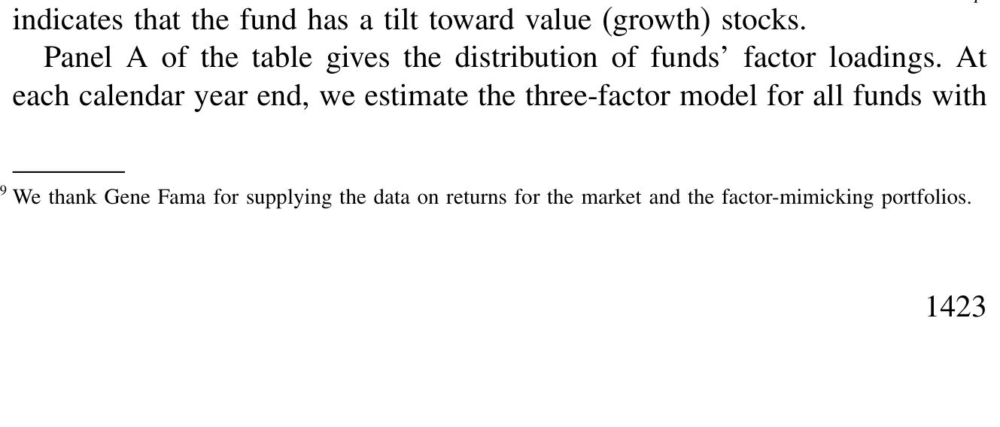
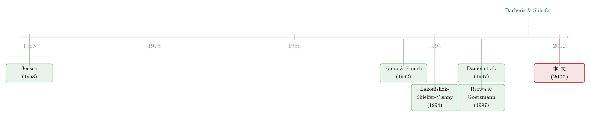

全是「随大流」的基金：为什么没人敢去买便宜货？
本文读的是 Chan, Chen & Lakonishok (2002, Review of Financial Studies)：用 Morningstar 的 3336 只美国股票型基金，作者发现绝大多数基金的风格都紧紧贴着大盘指数，几乎没人敢偏离；而少数真敢偏离的，又压倒性地倒向成长股和过去的赢家。这种「向魅力股倾斜」的集体行为，很难用「为投资者多赚钱」来解释，更像是代理与行为因素在作祟。
1 一个绕不开的悖论
先说一个学术界几乎人尽皆知的「事实」：长期来看，价值股 (value stocks)——那些账面市值比 (book-to-market) 很高、看上去「便宜」的股票——的纸面回报，曾大幅跑赢标普 500。Lakonishok, Shleifer 与 Vishny (1994) 把这件事钉得死死的。
那么一个再自然不过的问题就来了：既然「买便宜货」这条路在纸面上这么赚钱，为什么掌管着数万亿美元的职业基金经理，没有集体涌向价值股？
这不是个小问题。1990 年美国股票型基金的净资产还只有 2400 亿美元，到 1999 年已经膨胀到 4 万亿美元。这么大一笔钱，背后是无数个 401(k) 账户、无数个普通家庭的养老钱。可与此同时，几十年的研究又一遍遍地告诉我们：作为一个整体，共同基金跑不赢被动基准（Jensen, 1968 是这条线的起点）。在本文的样本里，基金组合的年均回报是 16.32%，而标普 500 是 17.92%——净跑输了 1.6%，这个数字几乎正好等于基金的费用率。
一边是「价值溢价」明晃晃地摆在那里，一边是基金集体性地不赚钱。这两件事摆在一起，本身就是一个悖论。本文真正想回答的，正是这个悖论背后的行为：这些拿着别人钱的经理，到底在按什么逻辑选股？
2 先把「风格」这把尺子校准
要研究基金「怎么选股」，得先有一把能描述风格的尺子。业界和学界不约而同地选择了两个维度：规模 (size) 和价值-成长 (value-growth)，后者用账面市值比来量。Morningstar、Lipper 的「九宫格」就是这么来的，它的学理根基则是 Fama 与 French (1992, 1993)。
但作者很谨慎：凭什么说这两个维度就抓住了经理真实的选股标准？万一基金经理心里想的根本不是「大小盘、价值成长」呢？
于是有了文章方法论上的第一步——用风格基准的「跟踪误差」来给不同分类法打分。逻辑很朴素：如果一只基金的真实投资范围确实落在某个风格里，那么用这个风格的定制基准去拟合它的收益，残差就应该很小。作者跑的是这样一个时序回归：
$$r_{pt} - r_{ft} = \alpha_p + \sum_{j=1}^{K} \beta_{pj}\, s_{jt} + \varepsilon_{pt}$$
这里 \(r_{pt}\) 是基金 \(p\) 在月份 \(t\) 的收益，\(r_{ft}\) 是一个月期国库券利率，\(s_{jt}\) 是 \(K\) 个风格指数，\(\beta_{pj}\) 就刻画了基金对各风格的暴露。为了避免「数据窥探」，作者用前 36 个月估参数、用随后不重叠的 12 个月去算样本外的跟踪误差波动率（tracking error volatility）。
结果很有意思。如果只拿标普 500 当基准，跟踪误差的中位数高达每月 1.95%（年化约 6.74%）；而换上三因子、Brown-Goetzmann 聚类、或 Sharpe (1992) 的「有效资产组合」模型，中位数齐刷刷地降到每月 1.4%–1.5%（年化 4.8%–5.3%）。更妙的是看「离散度」：标普 500 下，第一到第九分位的跨度是 2.75%，而三因子是 1.87%、Brown-Goetzmann 是 1.85%、Sharpe 最小为 1.77%。反观用 Connor-Korajczyk 主成分提出来的统计因子，跨度仍有 2.39%、2.47%，几乎和只用标普 500 没区别——统计因子在刻画基金风格上几乎帮不上忙。
一句话：用规模和账面市值比这两个朴素维度，就能把基金风格描述得跟那些更花哨的方法一样好。尺子，校准完毕。
3 真正的发现：所有人都挤在指数旁边
校准好尺子之后，文章最重要的一幅画面才浮现出来——基金风格的分布。
如果你把所有基金按规模、价值-成长两个维度铺开，会看到什么？答案是：绝大多数基金都密密麻麻地簇拥在一个宽基指数（比如标普 500）的周围，真正敢于在风格上「下重注」、远离指数的基金少之又少。这就是本文反复要讲透的那一个核心。

Table 5: provides another perspective on the distribution of fund styles from
可是——接着，一个自然的问题是——那些少数真的敢偏离指数的基金，偏向了哪一边？
这才是反转出现的地方。它们并不是均匀地向四面八方散开。当基金选择偏离基准时，它们压倒性地倒向成长股 (growth/glamour stocks)，以及过去表现好的赢家股 (past winners)。换句话说，敢偏离的人，几乎都偏向了同一个方向——那个「性感的」、有故事可讲的方向，而不是冷冰冰的便宜货。
这就把第 1 节的悖论解开了一半：价值溢价确实存在，但基金作为一个群体，根本没有去吃这块肉；少数主动出击的，反而扑向了历史上回报更平庸的成长与魅力股。
4 一致性与「漂移」：谁在中途变卦？
光看一个时点的分布还不够。作者又问：基金会不会始终如一地守着自己的风格？还是会中途「漂移」？
他们用基金当前的风格排名（缩放到 0–1）和三年后的风格排名做相关，发现整体上相关系数约为 70%，说明风格大体是稳定的——这也反过来证明规模和价值这两个维度确实抓住了基金行为里持久的东西。但魔鬼在细节里：账面市值比这个维度上，风格排名的平均绝对偏差是 0.16，并不算小，意味着不少基金的风格在悄悄挪动。
谁挪得最厉害？答案再次指向了同一个故事：风格漂移最显著的，是那些过去业绩差的基金，尤其是表现糟糕的价值型基金。一个买便宜货买亏了的经理，最容易做的事，就是悄悄抛掉价值的旗号、改换门庭去追当下吃香的风格——要么是想从亏损里翻本，要么是随大流。
至于一个流行的辩护——「我偏离基准是为了择时 (style timing)，是高抛低吸风格指数」——数据并不支持：整体来看，基金没有任何择时风格因子的能力。所以漂移不是本事，更像是压力下的应激。
把这些拼在一起，作者的论断就很有力了：基金集体扎堆指数、敢出击的就奔向魅力股、亏钱的价值经理纷纷叛逃——这一整套行为，用代理 (agency) 与行为 (behavioral) 的视角去看才顺理成章。一个看重职业前途的经理，紧贴基准能保证自己不至于太难看（这一点与基金间的同质化竞争一脉相承，可参见《新基金买的，正是你手里那批股票——把基金竞争量成一个数字》）；要冒险，就挑那些「好讲故事」、容易向客户和投资顾问交代的成长股。便宜、沉闷、需要耐心的价值股，反而成了职业生涯里的烫手山芋。
顺带一提，作者在调整了风格之后还发现了一个有点反直觉的结果：成长型经理在风格调整后，平均跑赢价值型经理。注意，这不是说成长股本身回报更高，而是说在「成长」这个赛道里，经理的选股似乎更增值——这恰恰为「敢偏离的人都奔成长去」提供了一个不那么阴暗的注脚。
5 收个尾：两把尺子，哪把更准？
最后还有一个方法论上的悬念。识别风格有两条路：一条看基金收益对因子的暴露（factor loadings，即上面那个回归），另一条看基金实际持仓的特征（portfolio characteristics）。这正是 Daniel 与 Titman (1997) 在个股层面争论过的老问题——是「贝塔」说了算，还是「特征」说了算？
作者把这两把尺子摆到基金层面对质，结论是：当两者给出不同答案时，基于持仓特征的方法在预测基金未来收益上做得更好。这其实很符合直觉——直接看一只基金真正持有了什么，总比从它的收益里反推它「像什么」要来得实在。
6 文献脉络
这篇文章站在两条研究河流的交汇处。
一条是共同基金业绩的河流：从 Jensen (1968) 发现基金跑不赢市场开始，到 Carhart (1997) 用四因子说明所谓「持续性」大多是动量与费用的产物，主线一直是「基金作为整体没有超额本事」。另一条是横截面异象与风格的河流：Fama 与 French (1992, 1993) 把规模和价值立成因子，Lakonishok, Shleifer 与 Vishny (1994) 论证价值溢价，Daniel 等人 (1997) 则主张用持仓特征而非因子载荷来做业绩基准。
本文的巧妙在于，它没有去重复「基金赚不赚钱」，而是追问「基金为什么这么选」，并把答案接到了代理与行为这条新支流上——这条支流上游有 Grinblatt, Titman 与 Wermers (1995) 的羊群行为、Chevalier 与 Ellison (1997) 的激励与冒险，下游则有 Barberis 与 Shleifer (2000) 的风格投资理论：当资金成群结队地追逐某种风格，价格本身都会被推离基本面（这套「贴标签就一起涨跌」的逻辑，详见《被「贴上同一个标签」的股票，就开始一起涨跌》）。本文恰好为这套理论提供了「基金端」的微观证据：风格扎堆与漂移是真实存在的集体行为。

7 评论与延伸（Q&A + 研究方向）
(a) 几个可能的疑问
Q：基金扎堆指数，难道不可能只是「理性分散、控制跟踪误差」吗？
单看扎堆，确实可以是理性的——客户用基准考核你，紧贴基准是稳妥之选。但本文的杀手锏在于不对称性：偏离不是随机四散，而是系统性地倒向成长与赢家股，且亏损的价值基金最爱叛逃。纯粹的风险控制解释不了这个方向性，代理/行为解释才能。
Q：「成长经理跑赢价值经理」会不会只是样本期 1990 年代成长股大牛市的产物？
这是个真实的担忧。样本横跨 1976–1997，而 1990 年代后期成长股极度强势，结论对窗口可能敏感。作者做了风格调整来剥离这一点，但风格调整本身依赖基准是否选对——这正是文章另一处的软肋（早期还有 1989 年前的幸存者偏差）。
Q：为什么主成分（统计因子）模型表现这么差？
统计因子是从收益协方差里「盲提」出来的，并不对应任何可解释的经济维度，样本外自然容易过拟合、且与基金真实的选股范围对不上。这也呼应了 Farnsworth 等 (2000) 关于各类定价模型样本外定价误差的发现。
Q：持仓特征法「更准」，是不是因为它用了更多信息（看到了真实持仓）而非方法本身更优？
很大程度上是的，这恰恰是它的优点而非缺陷。看到真实持仓等于绕过了「从收益反推风格」的噪声。代价是数据要求高——需要按时披露的全持仓，这在早年和很多市场都难以满足。
Q：风格「漂移」一定是坏事吗？会不会是经理在主动调整？
如果漂移来自有本事的择时，那是好事。但本文直接检验了择时能力，结论是整体上没有。叠加「亏损价值基金最爱漂移」这个事实，漂移更像是业绩压力下的被动反应，而非 alpha 的来源。
(b) 几个可能的研究问题与提案
1. 把「风格扎堆」搬到公司债基金
【经济故事】股票基金扎堆股指，那债券基金会不会扎堆某条信用/久期基准？信用市场的「魅力股」可能是高收益、知名发行人的债。若债券基金也系统性地向某类信用倾斜，代理逻辑同样适用。 【可行性】中。需要债券基金的持仓数据（如 eMAXX/Morningstar 固收持仓）与债券特征（评级、久期、流动性），识别上可借用本文的跟踪误差框架，难点在于债券基准的构造远比股指复杂。
2. 外资持有人会放大还是熨平风格漂移？
【经济故事】不同类型的持有人（本国 vs 外资）面临的代理压力不同。外资若更看重「可讲述」的故事，可能加剧向魅力资产的倾斜；若更被动指数化，则相反。 【可行性】中。需要按持有人类型拆分的持仓/资金流数据，识别可利用各国「可投资度」改革作为外生冲击（思路可参见《钱追着「去年的收益」跑》 一类的资金流研究）。
3. 风格漂移与流动性成本的交互
【经济故事】亏损的价值基金叛逃时要大举换仓，这会撞上流动性成本。漂移最猛的基金，是否恰恰承担了最高的交易冲击、从而进一步拖累业绩，形成恶性循环？ 【可行性】高。本文已有持仓数据，叠加成交/流动性指标即可，识别相对干净。
4. 业绩考核窗口的外生变化如何改变扎堆程度？
【经济故事】若代理压力是扎堆的根源，那么改变考核周期（如从年度改为多年）应当改变经理偏离基准的意愿。 【可行性】中。需要找到考核制度变更的自然实验（如某类养老金计划改革），DiD 识别，难在干净样本不易得。
参考文献
- Barberis, N., and A. Shleifer (2000). Style Investing. Working Paper, University of Chicago.
- Brown, S. J., and W. N. Goetzmann (1997). Mutual Fund Styles. Journal of Financial Economics 43, 373–399.
- Carhart, M. M. (1997). On Persistence in Mutual Fund Performance. Journal of Finance 52, 57–82.
- Chan, L. K. C., H.-L. Chen, and J. Lakonishok (2002). On Mutual Fund Investment Styles. Review of Financial Studies 15(5), 1407–1437.
- Chevalier, J., and G. Ellison (1997). Risk Taking by Mutual Funds as a Response to Incentives. Journal of Political Economy 105, 1167–1200.
- Daniel, K., M. Grinblatt, S. Titman, and R. Wermers (1997). Measuring Mutual Fund Performance with Characteristic-Based Benchmarks. Journal of Finance 52, 1035–1058.
- Daniel, K., and S. Titman (1997). Evidence on the Characteristics of Cross Sectional Variation in Stock Returns. Journal of Finance 52, 1–33.
- Fama, E. F., and K. R. French (1992). The Cross Section of Expected Stock Returns. Journal of Finance 47, 427–465.
- Fama, E. F., and K. R. French (1993). Common Risk Factors in the Returns on Stocks and Bonds. Journal of Financial Economics 33, 3–56.
- Grinblatt, M., S. Titman, and R. Wermers (1995). Momentum Investment Strategies, Portfolio Performance, and Herding: A Study of Mutual Fund Behavior. American Economic Review 85, 1088–1105.
- Jensen, M. C. (1968). The Performance of Mutual Funds in the Period 1945–1964. Journal of Finance 23, 389–416.
- Lakonishok, J., A. Shleifer, and R. W. Vishny (1994). Contrarian Investment, Extrapolation, and Risk. Journal of Finance 49, 1541–1578.
- Sharpe, W. F. (1992). Asset Allocation: Management Style and Performance Measurement. Journal of Portfolio Management 18, 7–19.
我的判断：这篇文章最大的贡献，不在某个惊人的系数，而在于它用大样本把一个「人人都隐约感觉到、却没人量化」的现象钉死了——职业基金经理是一群高度趋同的人，敢冒险的又齐刷刷奔向同一个性感方向。它把「基金为何不吃价值溢价」这个悖论，干净地接到了代理与行为解释上。识别上的隐忧也很清楚：全文是描述性证据，没有外生冲击，「代理/行为」更多是最合理的诠释而非被因果识别出来的机制；样本前期的幸存者偏差、以及结论对 1990 年代成长股牛市的敏感性，都值得警惕。我最想看到的后续，是有人用一次考核制度或持有人结构的外生变化，把「扎堆是被代理压力逼出来的」这句话，从相关性推到因果。